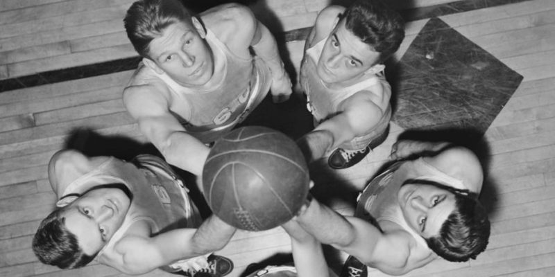

Historia del básquetbol
El básquetbol surgió en la YMCA (Young Men’s Christian Association o Asociación de Jóvenes Cristianos) de Springfield, Estados Unidos, ante la necesidad de alumnos y profesores de practicar un deporte bajo techo durante el crudo invierno de la región. Su invención, en 1891, se atribuye al profesor de educación física canadiense James Naismith (1861-1939). Sin embargo, también se conocen antecedentes de este deporte en las culturas ancestrales mesoamericanas (la maya y la azteca, particularmente).
Las 13 reglas que estableció Naismith para la práctica de básquetbol fueron:
- El balón puede lanzarse en cualquier dirección, con una o dos manos.
- El balón puede golpearse, pero nunca con el puño.
- El jugador no puede correr con el balón en sus manos.
- El balón debe sostenerse solo con una o dos manos. No se puede usar ninguna otra parte del cuerpo para sostenerlo.
- Un jugador no puede agarrar, empujar o realizar ninguna acción violenta e intencionada hacia un oponente. Una infracción de este tipo es considerada falta.
- Se considera falta a la acción de golpear el balón con el puño y las situaciones descriptas en los puntos 3, 4 y 5.
- Si un equipo comete tres faltas consecutivas se le dará un tanto al equipo rival.
- Un tanto se marca cuando el balón es lanzado hacia el aro y entra.
- Cuando el balón sale del campo, el jugador que lo toque deberá lanzarlo de nuevo al campo (no debe demorarse más de cinco segundos para hacerlo).
- El árbitro auxiliar es el encargado de juzgar y sancionar las faltas durante el partido.
- El árbitro principal es el encargado de llevar el control del tiempo, de la posesión del balón y los tantos.
- El partido tiene una duración de dos tiempos de quince minutos y cinco minutos de receso en el medio.
- El equipo que marque más tantos será el ganador. En caso de empate, el partido puede continuar hasta que se marque una canasta.
El primer partido profesional de básquetbol de la historia fue en 1896 y, desde entonces, el baloncesto fue evolucionando hasta definir sus reglas de un modo profesional. En 1936 el básquetbol masculino fue introducido como deporte olímpico en las olimpiadas llevadas a cabo en Berlín. Por su parte, el básquetbol femenino se convirtió en deporte olímpico en los juegos de Montreal 1976.
